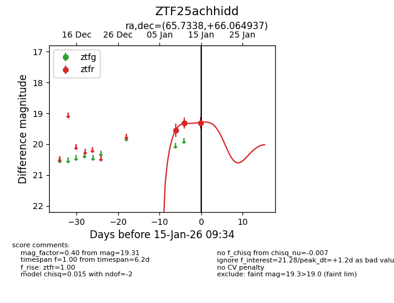
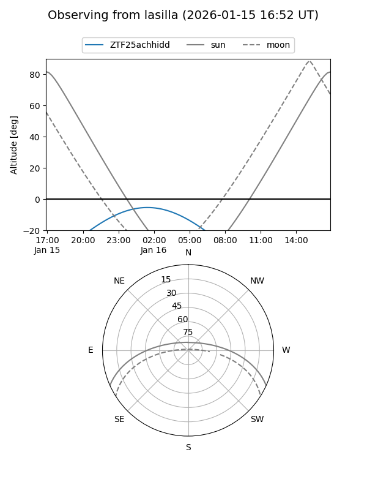
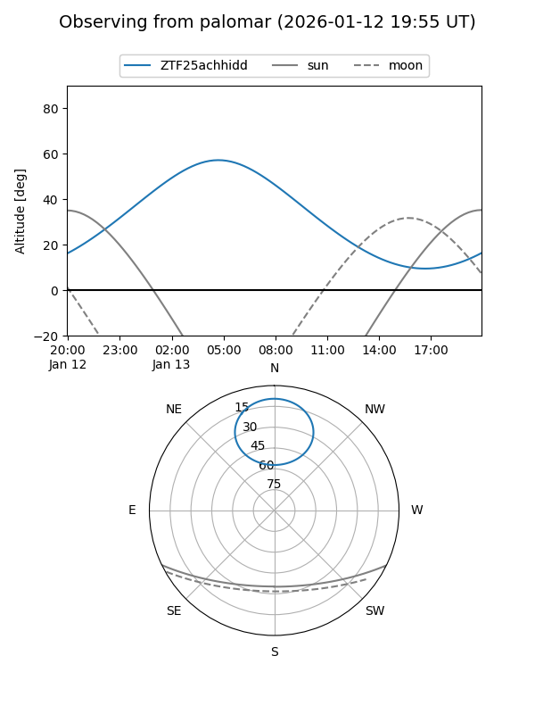
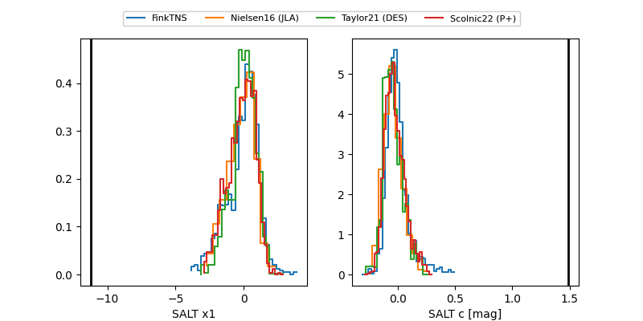

ZTF25achhidd
Target ZTF25achhidd at 2026-01-13 08:10
Aliases and brokers:
FINK: link
Lasair: link
ALeRCE: link
alt names
ZTF25achhidd (ztf,fink_ztf)
Coordinates:
equatorial (ra, dec) = 65.7338,+66.06494
equatorial (HMS+DMS) = 04:22:56.10,+66:03:53.77
galactic (l, b) = (142.2044,+11.46930)
Flags:
Photometry:
last ztfr=19.32
2 ztfr detections
Lightcurve

Visibility


Additional plots
